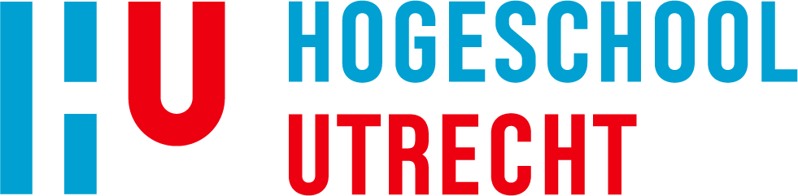
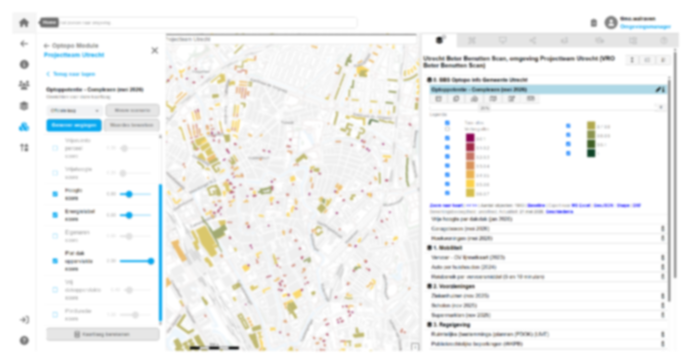
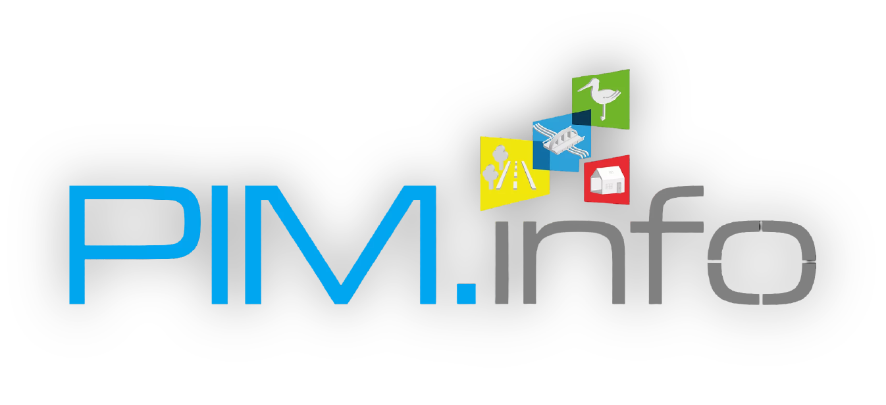

Beter Benutten Scan
Welkom bij de documentatie van de Beter Benutten Scan (BBS). De BBS is een digitaal analyse-instrument welke is ontwikkeld voor gemeenten om ambities voor beter benutten te bepalen, deze vast te leggen in beleid en vervolgens de uitvoering hiervan te ondersteunen. Ben je nog niet bekend met de Beter Benutten Scan? Bekijk dan eerst de introductie pagina van de documentatie.


Naar de scan & documentatie
Gebruik de scan via het PIM platform om verdichtingspotentie op pand- en gebiedsniveau te analyseren, of raadpleeg de documentatie voor de handleiding en achterliggende rekenregels.
Ontdek meer in thema beter benutten:
De Beter Benutten Scan (BBS) is een ontwikkeling van Hogeschool Utrecht, in samenwerking met coöperatie Circol, PIM.info en TNO, mede mogelijk gemaakt door subsidie van het ministerie van BZK.